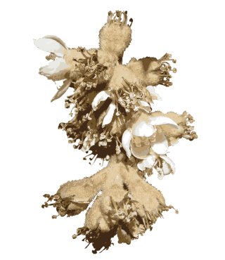
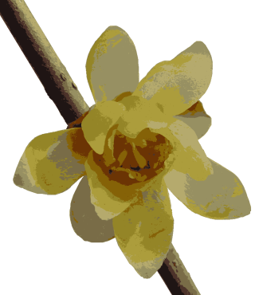
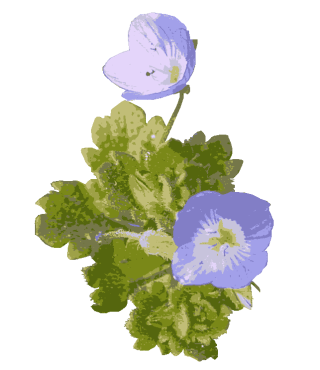
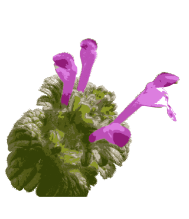
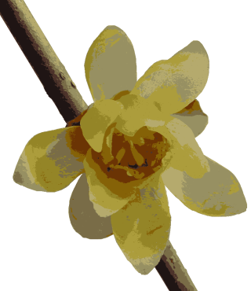
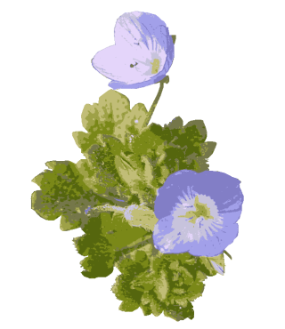
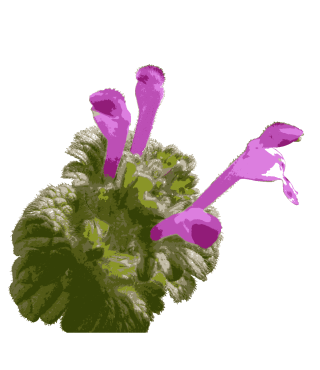

一月毎の花暦。全てが自分のことだから、身近な自身に目を向ける。

『初詣出会えた白きビワの花』

物寂しい季節に花を求め歩く。探しに出かけなくても、すべては自分が問題で、自分でできることばかり。
『暖かな日差し蝋梅香る風』

『春一番地に星屑イヌフグリ』

子供が小さい頃、公園からの帰り道、手に一杯摘んでコップに挿していた。
『ただこれとむつきに咲いたホトケノザ』
トップへ戻る
▼犬も歩けば…
ビワは石灰岩地に自生するといわれる常緑高木。葉は互生し、やや輪生状、葉身は広倒披針形、先端はとがり、基部はしだいに細くなる。脈はめだち、革質で光沢はあまりない。長さ15～25cm、中部以上にあらい鋸歯がある。花は11月に枝先に円すい花序となってつき、かすかに芳香がある。翌年6月に熟す。生食されるほか、缶詰にされ、葉は煎じて枇杷葉湯といい、暑気払いに使った。材はちみつでねばりづよく、木剣、印材、クシなどに使われた。『初詣出会えた白きビワの花』

▼探す
ソシンロウバイは香りがよく、花がすべて黄色で庭に植えられる落葉大型の低木。葉は対生し、卵形～卵状だ円形、長さ8～15cm、幅3～10cm、両端はとがり、全縁である。花は花被が多数で、内部の花弁は小さく暗紫色、中層の花弁は大型で黄色、外装は多数の細りん片となる。おしべは5～6本、めしべは多数で、つぼ状にくぼんだ花たくのなかにある。花が終わると花たくが成長し、偽果となる。内部に1～4個の紫褐色のそう果があり、6～7月に熟す。高さ2～5m。中国中部原産。物寂しい季節に花を求め歩く。探しに出かけなくても、すべては自分が問題で、自分でできることばかり。
『暖かな日差し蝋梅香る風』

▼星屑
オオイヌノフグリは平地の道ばた、耕作地、人家のまわりなどに生える2年草。全体に軟毛が生えている。茎は長さ10～30cmで基部で枝を分け、地面をはって広がる。葉は下部では対生するが、上部では互生となる。短い葉柄があり、広卵形で2～5対の鋸歯がある。葉腋に、1個ずつつく花は、朝開いて午後に落ちてしまう。花柄は葉よりも短い。がくは緑色で4深裂し、裂片は披針形。花冠は青色の地に濃い青色の線があり、深く4裂する。雄ずい2本。果実は倒心形のさく果。虫がおしべに止まると重みで花は下向きに垂れ、左右の雄しべに抱きつくと花粉が横腹になすり付く。おしべとめしべの長さが同じで同花受粉もする。明治の中頃ユーラシア大陸から帰化した。『春一番地に星屑イヌフグリ』

▼思い出
ホトケノザは道ばたや畑などに生える多年草。茎は四角形で細く、紫色を帯び、10～30cmの高さになる。葉は対生し、下部の葉はまるい腎形で長い柄があり、上部の葉は半円形で、葉柄がなく向き合った葉とともに茎を抱く。へりには鈍い鋸歯がある。花は紅紫色で、上部の葉腋に輪状に密生してつく。花冠は細長い唇形だが、花冠の伸びない閉鎖花をつけることが多い。寒い冬にも日当たりのよい場所なら花を咲かせる。透明感があり、
日差しに輝いて見える。ユーラシア大陸から帰化した。別名：サンガイグサ。子供が小さい頃、公園からの帰り道、手に一杯摘んでコップに挿していた。
『ただこれとむつきに咲いたホトケノザ』